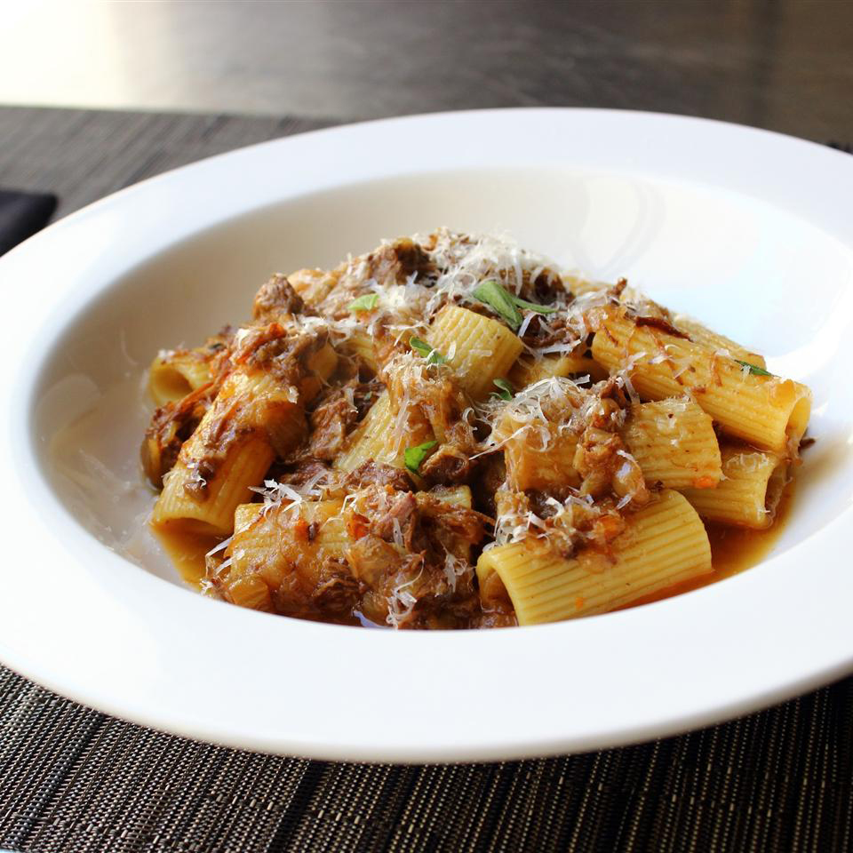

Rigatoni alla Genovese

I have no idea why this amazingly flavorful Genovese-style meat sauce isn't way more popular than it is. It's quite simply one of the best pasta sauces you'll ever taste, thanks to a very slow cooking process, and massive amounts of onions.
- 1 tablespoon olive oil
- 6 ounces pancetta or salt pork, diced
- 2 ½ pounds beef chuck
- 2 teaspoons kosher salt
- ½ cup diced celery
- ½ cup diced carrot
- 1 teaspoon kosher salt
- 1 teaspoon freshly ground black pepper
- 1 tablespoon tomato paste
- 1 bay leaf
- ⅔ cup white wine
- 4 pounds yellow onions, sliced
- 2 pounds red onions, sliced
- salt to taste
- 2 (16 ounce) boxes uncooked rigatoni
- 1 tablespoon chopped fresh marjoram leaves
- 1 pinch cayenne pepper
- 2 tablespoons freshly grated Parmigiano-Reggiano cheese
- Heat oil in a large pot over medium heat. Cook pancetta until most of fat is rendered out, about 6 minutes. Remove cooked pancetta with a slotted spoon and save.
- Raise heat to high and transfer meat to the pot. Season with salt. Cook and stir until liquid releases from beef and begins to evaporate, and meat browns, 10 to 15 minutes.
- Reduce heat to medium-high. Add celery, carrots, reserved cooked pancetta, salt and pepper. Cook and stir about 5 minutes. Add a heaping tablespoon of tomato paste, bay leaf, and white wine. Cook and stir, scraping up the brownings from the bottom of the pan, 2 to 3 minutes. Add sliced onions. Reduce heat to medium. Cover pot and cook 30 minutes without stirring. After 30 minutes, stir onions and meat until well mixed. Cover again, and cook another 30 minutes. Stir.
- Reduce heat to low and cook uncovered 8 to 10 hours, stirring occasionally. Skim off fat as mixture cooks. If sauce seems to reduce too much, add water or broth as needed to maintain a sauce-like consistency. Cook until beef and onions seem to melt into each other.
- Bring a large pot of lightly salted water to a boil. Cook rigatoni in the boiling water, stirring occasionally until just barely al dente, 10 to 12 minutes. Drain.
- Add rigatoni to the sauce and cook until heated through. Serve topped with a pinch of marjoram and freshly grated Parmigiano-Reggiano cheese.